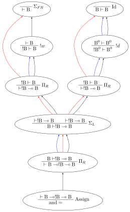
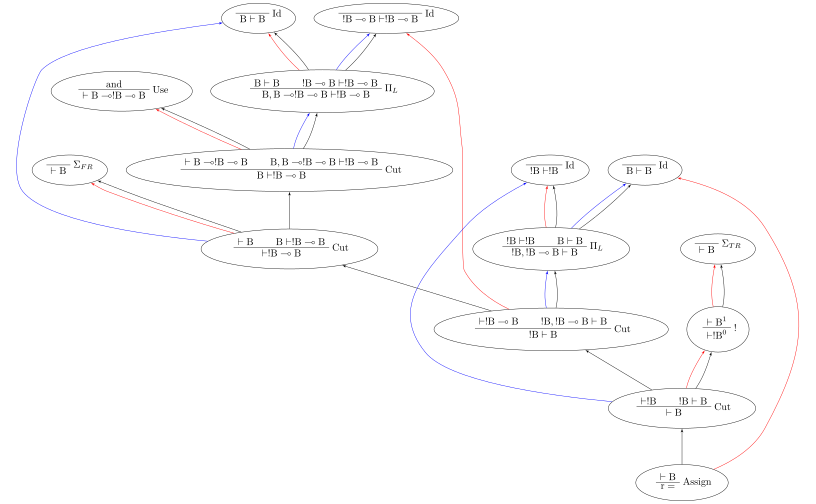

Stroscot takes after Haskell in that all of the language is compiled to a smallish core language. Considerations:
Based on [DMAPJ16], we use the full two-sided sequent calculus with cuts instead of an intuitionistic or one-sided calculus.
Based on optimal reduction, mostly [Gue96], we use linear logic sequents, with operators for contraction (duplication) and weakening (erasing).
Based on [Lev06], we aim for the largest allowable set of operators. In particular we generalize all of the different operators into two jumbo operators, sigma and pi. \(\Sigma\) contains LL’s synchronous/positive operators 0, 1, plus ⊕, and times ⊗. \(\Pi\) contains LL’s lollipop implication ⊸ and asynchronous/negative operators top ⊤, bottom ⊥, with &, and par ⅋.
We start with the generalized \(\Pi\) rule. This is similar to Levy’s rule except it allows multiple conclusion propositions. We have indexed variables \(A_{ij}\) and \(B_{ik}\) where \(0 \leq i < N, 0 \leq j < m_i, 0 \leq k < n_i\). We call \(N\) the length of the jumbo type and the list \([(m_i,n_i)]\) the jumbo-arity.
Next we have the generalized \(\Sigma\) rule. This is the dual of \(\Pi\). Following [Wad03][Cro04] the dual of implication is called “subtraction” or “difference” and is denoted \(-\). For normal ADTs, the RHS of the difference is empty, i.e. it looks like \(\Pi (a. A - \cdot \mid b. B_1,B_2 - \cdot \mid c. \cdot - \cdot)\). The syntax \(\Pi [(a, [A], []),(b, [B_1, B_2], []), (c,[],[])]\) might be clearer.
When the RHS is nonempty we get terms with holes, that can be pattern-matched by filling the holes, e.g. difference lists. (TODO: check that this actually gives efficient concatenation)
To allow/restrict contraction and weakening we have two S4 modalities, bang/!/”of course” and whim/whimper/?/”why not”. A call-by-value function type is A-o?B while call-by-name is !A-oB. To enforce the S4 rules we add a level index to every term, as in [MM95] and [Gue96]. The level of a context is the maximum of the levels of its terms, negative infinity if empty. As a convention, the indices are omitted in all the rules besides promotion and dereliction, because all the indices in a non-promotion/dereliction sequent are the same value and so they can be recovered by propagating the indices from the promotion/dereliction rule(s). Normally promotion has \(j=i+1\) instead of \(j>i\), shrug.
Instead of binary contraction we allow \(n\)-ary contraction for \(n\geq 2\).
So to review, the propositions in the sequent can be:
Pi / Sigma
A bang !A or whim ?A
Finally we have the structural rules. As is usual for linear logic there are no structural rules for weakening or contraction (they are restricted to bang/whim above).
\[\begin{array}{cccc}
\rule{}{A \vdash A}{\text{id}}
&
\rule{\Gamma \vdash A, \Delta \quad \Theta, A \vdash \Lambda }{\Gamma, \Theta \vdash \Delta, \Lambda }{\text{cut}}
&
\rule{\Gamma \vdash \Delta, A, B, \Theta}{\Gamma \vdash \Delta, B, A, \Theta}{\text{x}_R}
&
\rule{\Gamma, A, B, \Delta \vdash \Theta}{\Gamma, B, A, \Delta \vdash \Theta}{\text{x}_L}
\end{array}\]
Following Haskell we also want to support infinite expressions like x=1:x. These are constructed as a terminal coalgebra. We can represent these using variables and assignments as a system of equations. The semantics is that the variable usage is a “hole” that plugs in a copy of the derivation tree from the variable assignment. We disallow the trivial case of a variable being a usage of itself; there must be at least one other rule invocation.
To handle level indices in infinite trees, we store the difference function \a->a+(j-i) and recover the levels by tracing from the root of the derivation tree (which is always level 0) and applying the difference function when encountered.
When we compile following GHC’s model, the use/assign variables nodes are all known statically, and we start from one distinguished assignment (the root). As we manipulate the graph, we only ever copy in parts of other assignments. So there’s a “working graph” where reduction is performed and then the rest is static data. Assuming the static data is stored on disk and paged in/out as needed, we can minimize runtime memory use in a compiler pass by introducing as many use-assign indirections as possible, one for every sequent in the derivation. This also makes the connections between rules uniform. But having lots of indirections is inefficient so a later pass would remove indirections that will be immediately used (chunkification).
Since proofs are programs by the Curry-Howard correspondence, we can use the rules as a programming language. But we need a syntax for it, since writing sequents all the time is tedious and rule invocations with a sequent like \(A, A \vdash B\) are ambiguous as to which proposition \(A\) is used.
We define the types \(\text{B} = \Sigma [(F,[],[]),(T,[],[])]\) and \(a \to b = \Pi [(\text{func}, [a], [b])]\). \(\to\) is right associative as usual. Our program then has the following derivation tree, among others (we could add a bang to the first argument, use a multiple-argument function, expand out the identity, etc.).
We can split up the derivation tree into a graph, where each node is a rule instance (the vertical bar in the derivation tree) and the syntactic subderivation relationship is a black edge.

The derivation tree suffers from what Girard calls “the bureaucracy of syntax”. For example the cuts on \(\Sigma_{F R}\) and “Use and” can be swapped without changing the meaning. The derivation tree is also ambiguous in that we could have multiple B’s and the derivation tree would not specify which one is used. Furthermore using the exchange rule all the time is tedious.
To solve these issues there is another set of connecting edges, the red/blue edges in the graph. The edges are each proposition’s introduction/elimination (highest and lowest usage). Exchange rules can be omitted because we reference the propositions directly. The color is for clarity - a proposition on the left (antecedent) is blue and likewise right (succedent) is red. In the code each edge is identified as a unique variable in a slot, so there is no coloring. But depicting n-ary ports in a visual way without ambiguity seems hard.
Most rules do not modify the contexts \(\Gamma, \Delta, \Theta, \Lambda\) and so the proposition edge skips the node as it is not an introduction/elimination. But there are exceptions that do need the context:
\(\Pi_R\) and \(\Sigma_L\) rename and combine the context from each case, similar to a phi-node. This can be skipped if there’s exactly one case.
! / ?. These define a box and the box must be clearly defined so we can duplicate/erase it properly.
Use/Assign, so that substitution has something to work with and the free variables are identified
For computation, we do not need the syntactic subderivation inclusion relationship at all. (TODO: is this true? how hard is it to preserve the syntactic relationship under cut elimination?)
If we drop the syntactic inclusion relationship, reverse the directions of the blue edges, and drop the sequents (=types), then the graph looks much more like your traditional expression tree. In particular cuts and identities become straight edges rather than top/bottom. PiL is an application node, PiR is a lambda, SigmaL is case, and SigmaR is a constructor (depicted in the graph as True/False).
The identity nodes function like a thunk constructor; the stuff in between the identity and the cut is a stack manipulation operation.
The concrete syntax serializes the non-simplified net into a textual form. Each edge is assigned a unique identifier, then all the nodes are written out. The order of the nodes is not important, but the pretty-printer can choose something for readability.
We should also write out the types of the propositions, so they can be used to get back the full sequent as in the presentation above. But for now Core is untyped, so there is only one universal type and the types of the edges are not written out.
Currently the core syntax is just Haskell’s datatype syntax. You can see how it looks in src/Core.hs, dataSyntax.
Move the two nodes of the cut next to the cut, replacing use with copy-paste
Identity
Copy the cut’s non-identity edge to the non-cut edge that links to the identity node. If the cut has levels then label with (id edge)->(non-id edge).
Delete cut and identity
Matching left/right Pi/Sigma
Erase non-matching cases, if any
Link context variables of matching case with outside variables, if any
Nodes should have same # of edges. Create cut nodes for each edge-pair.
Link cut nodes with matching variable on each side.
Preserve cut’s level numbers (but not active status) for red-red, swap for red-blue
Delete PiR/PiL nodes
Promotion/contraction
Create duplication nodes for each out-edge of promotion, color=red/blue
Link duplication nodes, if multiple
Duplicate !p node and point to duplication node, marking one with arrowhead
Duplicate cut and point to each side of contraction + !p nodes
Create new contraction node for each context variable pointing to the two !p’s
Change references to !p to references to context contraction nodes
Delete original !c contraction node
Promotion/Dereliction
Replace cut’s blue edge with edge of dereliction
Move level on cut’s red edge to cut’s blue edge, if not set
Replace cut’s red edge with red edge of promotion
For each context edge going into !p, replace edge with !p’s edge
Delete dereliction and promotion
Duplication:
Duplicate node
Create duplication node for each out-edge of node, copying edge from node
Point each copy’s edge to duplication node
Add arrowheads to one of the copy’s edges (higher number)
Change dup node’s references to point to node copies, deleting arrowheads & using to disambiguate
Link duplication nodes / fix links
Multi-node Duplication:
Duplicate nodes & rename
Fixup node copies to point within themselves
Create duplication node for each non-active out-edge of node, copying edge from node
Replace each copy’s non-active edges with edge to duplication node.
Remove arrowheads from first copy’s non-active edges. Add arrowheads to second copy set’s non-active edges.
Change dup node’s references to point to node copies, deleting arrowheads & using arrowheads to disambiguate
Link duplication nodes / fix links
Dup-Id-Dup:
Duplicate identity node
Replace references to dup nodes with identity reference (odot=higher)
Delete duplication nodes and links
For !w/?w we delete the rule with ! and create no cuts.
To eliminate \(\forall\) or \(\exists\), we extend the variable substitution to the other side.
The commuting cases are mostly handled by our graph formalism; cuts on the context are pushed down to where they apply. But for PiRight/SigmaLeft there can be a cut on the context variables. To push it down we need to duplicate the cut and its other side for each case. Of course, if there are only 0/1 cases, there is no duplication. But in general we need to introduce a phi-duplication node; when the phi-dup node encounters an identity it adds the edge from the other side to the context variables. Overall commuting deletes code or exposes more reduction opportunities. There is also the potential to reverse-commute and deduplicate part of the cases, if they are the same.
To expand identities, start with PiRight/SigmaLeft, then use the opposite rule on the opposite side for each case, and terminate with identities. But actually we should prefer to contract identities, searching for expanded identities and replacing them with identities on larger types.
Looking at the graph for our simple andFalseTrue example we can see the general pattern for reduction, at least normal-order leftmost-outermost WHNF reduction. We start at the root and go down. The first node we encounter is not a data node SigmaRight / PiRight / etc. (we would stop with WHNF), instead it is an identity node. Since there is only one root node, the highest parent of the other side of the identity must be a cut node (unless the root node has a blue input edge). We then reduce this cut node. In this case it disappears and we move up to the PiL-PiR cut node. Here we create two cut nodes, one cuts the PiL near the root and the output of the SigmaL while the other cuts Id-Cut-False and the input of the SigmaL. The cut on the output of the SigmaL is blocked, so we go up the input of the SigmaL and our reduction stack looks like Root -> I -> PiL -> Cut -> SigmaL -> Cut. First we cut the Id and then we cut False-SigmaL. This selects the left PiR with !w/False for our output. We cut this with the PiL with !True, creating a disconnected cut between !True and !w (that is immediately erased) and another cut between our result and the root identity node. We erase the identity and end with our result False.
So the general pattern is, go down red / go up blue until you get to a redex (cut node, dup node with target covered)
Optimal reduction ensures the minimal amount of cut elimination (reduction) steps. It’s basically normal order, but we have to be careful to avoid duplicating cuts. See the example.
Primitives can be handled by hacking special cases into Cut; we add primitive functions of type PiR that use the arguments provided by PiL during a cut, and also literals, special values of type SigmaR.
Linear logic has boxes, The difference is not observable if we do not use duplication; e.g. (\x.print(x+1))(print("x");2) can only print x3. But if we change x+1 to x+x then CBV is x4 while CBN is xx4.
So how do we specify the difference between the two, in linear logic?
sx=(y,z)=dupxprint(y+z)s(print("x");2)
Boxes do have some performance cost, so how can they be avoided? There are cases where boxes are not necessary:
When the term is linear or affine and does not need to duplicate anything.
When the duplication is duplication of a graph without any cuts, such as a boolean, integer, list of integers, etc. Even when there are cuts, the value can be forced and then copied directly, using a fold. (per [Fil92]) Q: Does this change the evaluation semantics to be stricter?
Inlining, when the duplication is carried out, resulting in two terms.
More complex cases enforced by a typing system, such as Elementary Affine Logic.
These probably aren’t needed, as let can be encoded as a record and recursion via a fixed-point combinator or a cycle in the graph. In particular [Kis13] outline a polyvariadic combinator:
fix_polyfl=fix(\self->map($self)fl)
To implement fix we can use the variant of the Y combinator \(\lambda f.(\lambda x.x x) (\lambda x.f (x x))\). To type it we need the cyclic/recursive type \(Wr = \Pi[(^w, Wr, r)]\) (in the sense of an infinite, regular tree). Though, once we have recursive types, we could allow recursive proof trees as well; then implementing recursion directly is probably not too hard. BOHM uses a fan/duplication node combined with a loop.
In call-by-value reduction, work is duplicated quite frequently. And lazy or call-by-need reduction, although more efficient computation-wise than call-by-value, still duplicates work. An example is
This produces 5 in Haskell. However, without GHC’s optimizations, "i" is evaluated (printed) twice. With optimal reduction, all function applications with known arguments are evaluated exactly once. In particular, the only time a function is evaluated twice is when it is called with different arguments. In the example above it corresponds to a “hoisting” transformation that makes i=(unsafePerformIO(print"i"))`seq`\w->w, but more complex cases have higher-level sharing that no code transformation can mimic.
Although GHC will do this with -O, it does it messily; the interaction of seq and inlining is the source of numerous bugs. In contrast, optimal reduction is based on a principled approach to sharing. The graph corresponds almost exactly to linear logic proof nets. Also, since the sharing is part of the reduction semantics rather than a compiler optimization, it is available in the interpreter (and in the runtime system too). There are no thunks, so there is no need for seq; instead there are boxes and duplicators.
Reduction is fairly simple to implement without duplication, as it is just pairs of constructors and destructors annihilating and joining their wires, or, for case, joining some eraser nodes. But what about duplication?
Stroscot takes its general inspiration from the delimiter system found in Lambdascope. However, instead of having levels Stroscot keeps explicit track of “environments” or “scopes”. In particular a delimiter has an inside scope and an outside scope. Initially, all delimiters look like opening/closing delimiters where the outside scope is the default/root scope 0 and the inside scope is the scope of the multiplexer involved. When two delimiters meet, the touching outer scopes are compared for equality (they should always be equal) and one inner scope remains the inner scope while the other inner scope become the new delimiter’s outer scope.
To determine which scope becomes the outer scope, delimiters are also marked as “head”, “full”, or “empty” depending on whether they represent a reference to the result of a duplication, the target of a duplication, or a path that crosses the scope but doesn’t duplicate. Interactions are allowed only between head delimiters and other delimiter; the head delimiter’s scope stays on the inside.
For multiplexers the situation is a little more complicated. A multiplexer also has two scopes, an inner “label”/identity-like scope and an outer “ambient” scope. When a multiplexer crosses a delimiter, from outside to inside, its “ambient” scope is changed to the delimiter’s inside scope. Meanwhile the delimiter’s scope is split into a new set of scopes, and this is indexed by the label scope. In the Stroscot code these are referred to as “variant” scopes. In particular, multiplexers with the same label scope must split other scopes into the same set of variant scopes at each interaction. This is not too hard to keep track of, just give each scope a map otherscope->variantscopeset that’s lazily created.
There are also quantifier rules, probably unnecessary but I’ll write them down for reference. For these \(x\) must have no free occurrence in \(\Gamma\) or \(\Delta\), while \(y\) may occur. \(A[t/x]\) stands for the proposition \(A\) where all free occurrences of the variable \(x\) have been replaced by the proposition/term \(t\) (and bound variables have been renamed when necessary).
\[\begin{array}{cccc}
\rule{\Gamma \vdash A, \Delta}{\Gamma \vdash \forall x. A, \Delta}{\forall_R}
&
\rule{\Gamma, A[t/x] \vdash \Delta}{\Gamma, \forall x. A \vdash \Delta}{\forall_L}
&
\rule{\Gamma \vdash A[t/x], \Delta}{\Gamma \vdash \exists x. A, \Delta}{\exists_R}
&
\rule{\Gamma, A \vdash \Delta}{\Gamma, \exists x. A \vdash \Delta}{\exists_L}
\end{array}\]
For example, the term F2G2=(\x.x(\w.w)xx)(\y.(\x.xx)(yz)) from page 17 of [AG99]. To write the derivation tree we must define a recursive type; the simplest is \(\Omega = \, !\Omega \to \Omega\) (which is sufficient for the untyped call-by-name lambda calculus) but here we use the mutually recursive types \(S,T,f\) parametrized over \(a\) to obtain a finer scheme and make the derivation tree less ambiguous.
The real hard part is doing “readback”, i.e. proving that all of these transformations are either no-ops on the original lambda term or valid beta reductions. Since there is so much scope popping and pushing and varianting it is definitely a little complex. Also I decided to keep the levels from the original Lambdascope implementation for correctness verification purposes, so there is twice the work. But if you read Ian Mackie’s paper on efficient interaction nets implementation you will see that this “readback” algorithm also provides a way to directly execute the proof net / graph with call-by-value semantics at each reduction step. So it also has a close connection with how to compile the graph to machine code. Since our scopes are unique and the “stack” stores only one director index for a scope at a time, the scopes can correspond directly to machine registers or memory locations.
Scopes are nested, forming a simple tree hierarchy. When an opening head delimiter of scope A encounters a closing full or empty delimiter of scope B, then A is reparented under B. In particular the one closing delimiter of scope B vanishes, and duplicates of it are propagated to the outside of all other delimiters of A.
It should be possible to avoid this O(n) operation by keeping a depth counter in the scope and each delimiter, with the total number of scopes that the delimiter enters/exit being the sum of the scope’s depth and the delimiter’s depth. Then the interaction would decrement the A scope delimiter’s local depth counter by 1, increment A’s scope-wide depth counter by 1, and vanish B’s delimiter as before. But this hasn’t been implemented yet.
First we reduce the top cut:
Next the other PiR-PiL cut:
Then, to clean up the graph, the trivial cuts:
To handle the duplication from the contraction we duplicate the cuts/promotion rule and introduce a duplication node Dup to incrementally duplicate the rest of the structure:
Then we do cut elimination on what remains. Cut/id is trivial.
Then the 3rd PiL-PiR cut / beta reduction, corresponding to Fig 2.14 (4) / (5) on page 31 of [AG99]:
At this stage we can’t duplicate any more because of the !p box. So we do the other cut.
The !c is exposed so we can create another duplication.
More duplication
Up until now we have avoided duplicating identity nodes; this is because duplicating an identity node from only one side would require creating an up-moving duplicator; since cuts reduce downwards this would break the reduction semantics and possibly lead to work duplication. But here we have duplicators on both sides of the identity node, and can duplicate it without reversing directions.
At this point we finish out the duplication of the identity function, similar to Fig 2.19(8).
Now we can do the other duplication. Duplicating the !p requires all inputs to be covered. similar to identity nodes.
Add the last duplication node and reduce, for consistency with figure 2.17 (7)
2.17(7) has 5 duplicator nodes, 3 app nodes, and 3 lambda nodes. In comparison, our graph has 5 duplicators, 4 cuts, 3 identities, and one each of PiL, PiR, !p, and !d. So there are still the two pairs of fans but the nodes otherwise look completely different.
Anyway, for the pair on the right, if we scroll up a bit we can see that we were duplicating a single PiR-!d-I loop, the identity function. So the duplication of the I must resolve to another identity function, with the two connecting.